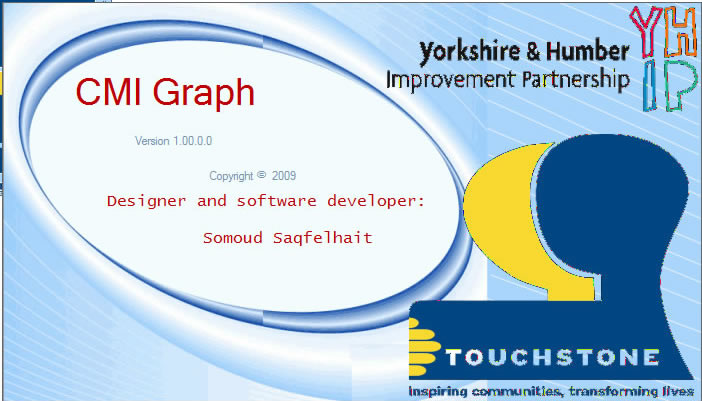
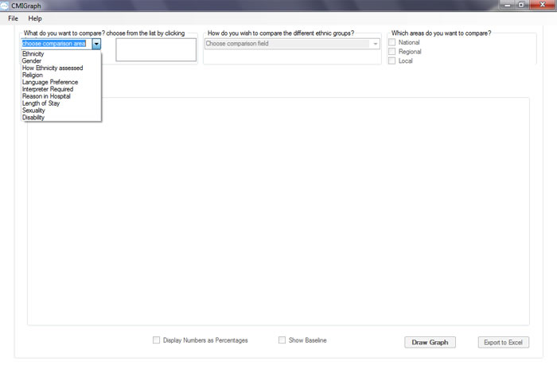

First, you need to install CMIGraph. for help on doing that please click here
once your CMIGraph is installed you will find shorcuts for it on the desktop and the program's menu.
the first thing you will see is the splash screen shown in the figure below.

you can click on the splash screen to make it disappear or wait tell it disappear.
then the main CMIGraph will appear as shown below
